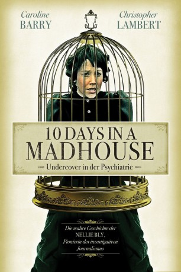

#6467 10 Days in a Madhouse
 
 IMDB-Wertung: 6.4 / 10
IMDB-Wertung: 6.4 / 10  Metascore: 0
Metascore: 0 
Im Jahre 1887 nimmt die 23-jährige Journalistin Nellie Bly (Caroline Barry) einen gewagten Auftrag an: Sie soll eine Reportage über die Psychiatrie auf der New Yorker Blackwell s Island schreiben. Um an Informationen aus erster Hand zu kommen, täuscht Bly eine psychische Störung vor und lässt sich kurzerhand einweisen. Ihr offenbart sich ein schreckliches Bild im Umgang mit den Patienten. Am eigenen Leibe bekommt sie die unzumutbaren Zustände zu spüren, unter denen die Insassen leiden. Sehr viel schwieriger als der Weg hinein entpuppt sich für Nellie jedoch der Weg aus der Heilanstalt heraus, nicht zuletzt wegen des skrupellosen Leiters Dr. Dent
Jahr: 2015
Dauer: 109 Minuten
FSK:
Land: USA Studio: Broad Green PicturesTonspuren:
Untertitel:
Auflösung: 1080p (1920x1080) Größe: 11264 MB
Genre: Drama
Regisseur: Timothy Hines
Drehbuch: Timothy Hines
Soundtrack:
Darsteller:
- Caroline Barry als Nellie Bly
 Christopher Lambert als Dr. Dent
Christopher Lambert als Dr. Dent- Kelly LeBrock als Miss Grant
- Julia Chantrey als Anne Neville
- Alexandra Callas als Miss Grupe
- David Mitchum Brown als Dr. Canton
- Natalia Davidenko als Mrs. Schanz
- Andi Morrow als Leona Fox
- Everette Scott Ortiz als Dr. Field
- Talya Mar als Bridget McGuinness
- Saskia Larsen als Arena Pugh
- David Lee Garver als Dr. Kinier
- Bob Olin als John Cockerill
- Darlene Sellers als Matilda
- Monique Robbins als Miss Grady
- Gwyn LaRee als Mary
- Michael Swanson als Vernon M. Davis
- Jessa Campbell als Tillie Mayard
- Susan Goforth als Mrs. Stanard
- Katie Singleton als Mrs. Caine
- Christopher Beeson als Dr. Ingram
- Rachel Bohanon als Miss Cotter
- Sam Davidow als Joseph Pulitzer
- Kaitlin Otoole als Margaret McCartney
- Matt Storm als Ambulance Surgeon
- Darrell Salk als Judge Duffy
- Andrea Diaz Ariza als Young Nellie Bly
- David Ballantyne als John Ford
- Lauren Cooper als Sarah Fishbaum
- Corrina Cornforth als Urena Little Page
- Kent Dean als Dr. Caldwell
- Anita Francis als Josephine Despreau
- Sam Henderson als World Newspaper Journalist
- Tom Henderson als Bill Nye
- Finn J.D. John als World Newspaper Journalist
- Justin Kimble als World Newspaper Journalist
- Tim King als World Newspaper Journalist
- Mark Lysgaard als Policeman Bockert
- Chad Oxenford als World Newspaper Journalist
- Michael Podrybau als Orderly
- West Ramsey als Grand Jury Foreman
- Stephen Roseland als Policeman 1
- Dale C. Schmidt als World Newspaper Journalist
- Bruce Taylor als World Newspaper Journalist
- Michael Timshel als World Newspaper Journalist
- Jacob Timshel-Boatner als World Newspaper Journalist
- Julia Ubrankovics als Mental Patient
- Keith White als Peter A. Hendricks
Datei: X:\2015(A-F)\10 Days in a Madhouse (2015, FSK, 1920x1080).mkv seit 27.06.2017
Festplatte: HD 2015(A-Z)
 Es gibt insgesamt 143 Filme in der Gruppe '2015(A-F)'
Es gibt insgesamt 143 Filme in der Gruppe '2015(A-F)'